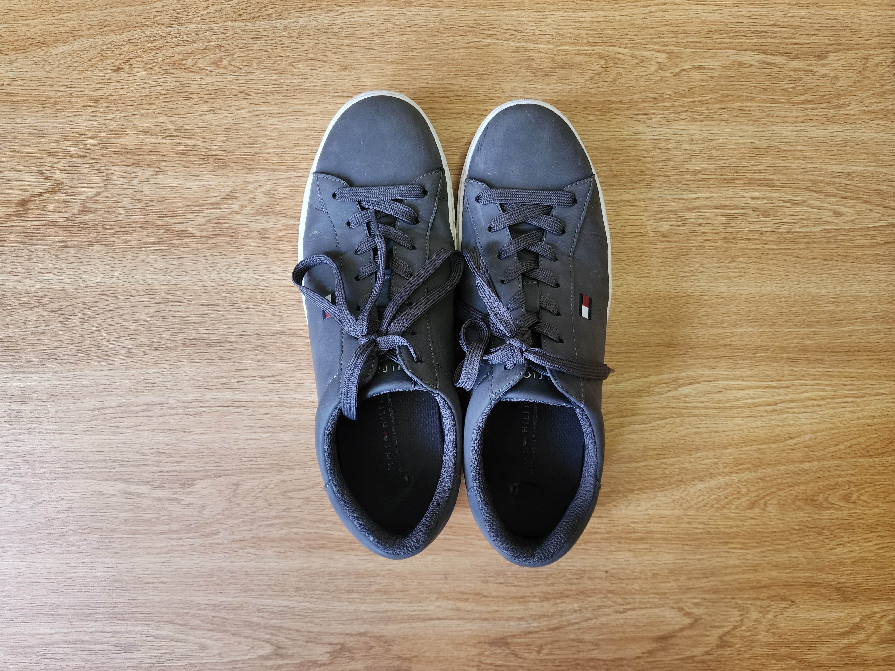
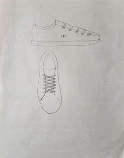

Description

The item is a pair of men's grey Tommy Hilfiger sneakers, featuring a low-top casual design that bridges the gap between athletic wear and dress shoes. The upper material has a matte, suede-like texture in a cool grey tone, accented by dark grey laces threaded through six pairs of metal eyelets.
The shoes feature the iconic Tommy Hilfiger "flag" logo—a small rectangle of red, white, and blue embroidery—stitched on the outer side. This flag motif has been a brand signature since the company's founding in 1985, and it remains one of the most recognizable symbols in American casual fashion.
Physically, the shoes feel lighter than they appear, with a flat white rubber sole that offers minimal arch support, characteristic of "fashion" sneakers rather than performance footwear. The insole has flattened significantly from extended wear, and the stitching near the toe box shows early signs of separation.
Anecdote

I bought these shoes specifically for a job I held at Express, the clothing retailer. The management enforced a strict dress code that banned standard athletic sneakers, so I needed something that looked professional enough to pair with chinos but was still comfortable enough for an eight-hour shift.
I remember a specific shift during the holiday season when the store was chaotic. The air conditioning was blasting, the music was loud, and the line for the fitting rooms wrapped around the denim wall. I spent nearly the entire shift running back and forth between the front register and the back stockroom, hunting for specific sizes of button-down shirts.
While they looked great as part of the "sales associate uniform," these shoes weren't built for that level of mileage. Somewhere between organizing piles of sweaters and climbing ladders in the back, the friction began to take its toll. The soles started to smooth out, and the once-crisp grey finish developed a layer of scuffs that no amount of cleaning could fix.
I didn't notice exactly when it happened, but eventually, I started feeling a sharp rubbing against the back of my ankle. When I finally took them off at home, I realized the soft inner lining at the heel had completely worn through from the constant movement. They represent that period of working retail—looking polished on the outside, but slowly worn down on the inside by the grind of the job.
Research Facts
Here are three key facts about the brand and history behind these shoes:
-
Brand Origins:
The brand was founded by Thomas Jacob Hilfiger in 1985 in New York City, debuting with a collection of modern button-down shirts and chinos before expanding into footwear, fragrances, and home furnishings.
Source: Tommy Hilfiger Newsroom -
Sustainability Goals:
Tommy Hilfiger has a sustainability program called "Make it Possible" with a vision to "Waste Nothing and Welcome All," aiming for circularity in their products to reduce the exact type of waste represented by these worn-out shoes.
Source: PVH Corp Responsibility -
Ownership:
The Tommy Hilfiger brand was acquired by PVH Corp (which also owns Calvin Klein) in 2010, shifting it into a massive global conglomerate with annual revenues exceeding $9 billion.
Source: PVH Corp Brands